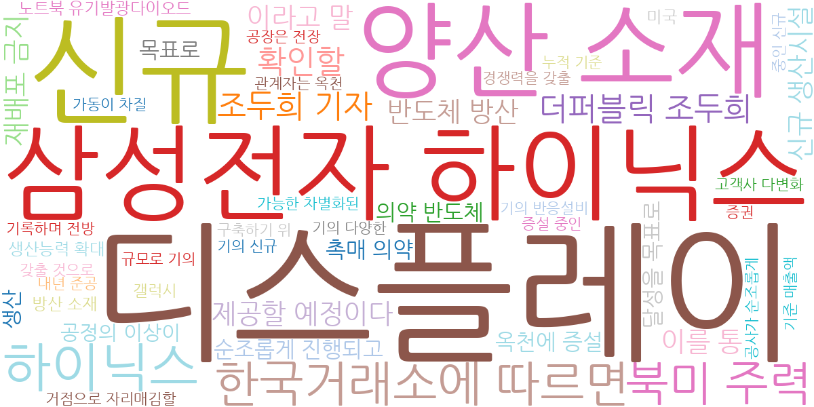
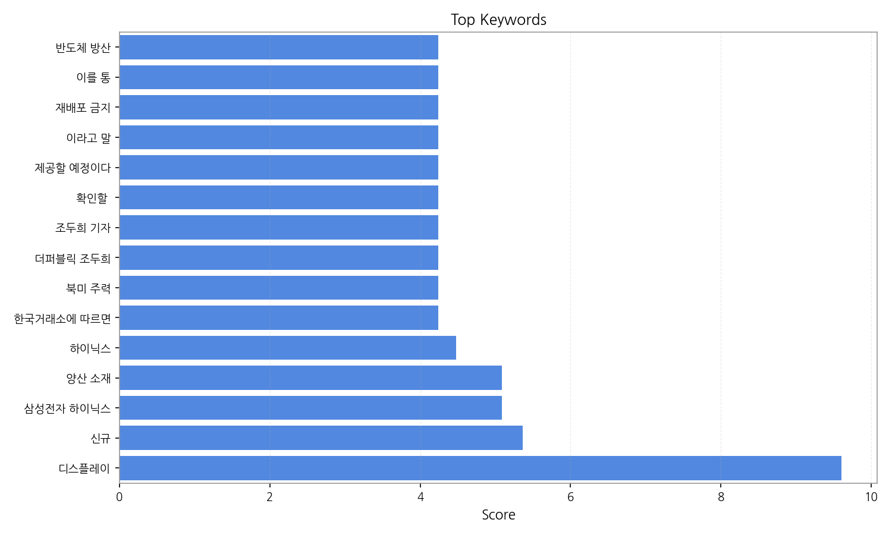
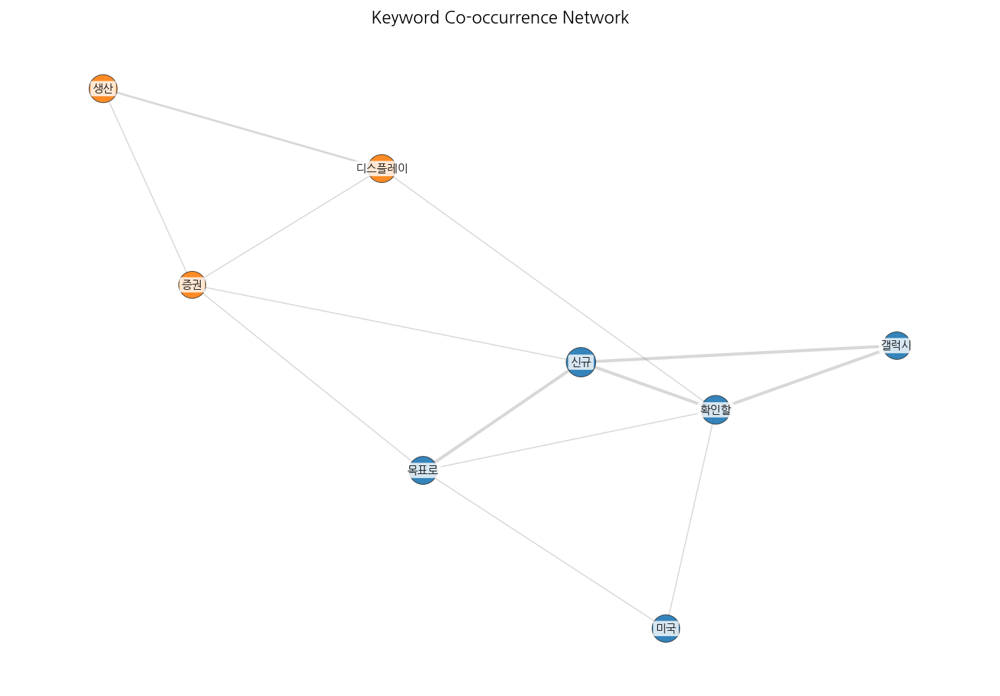
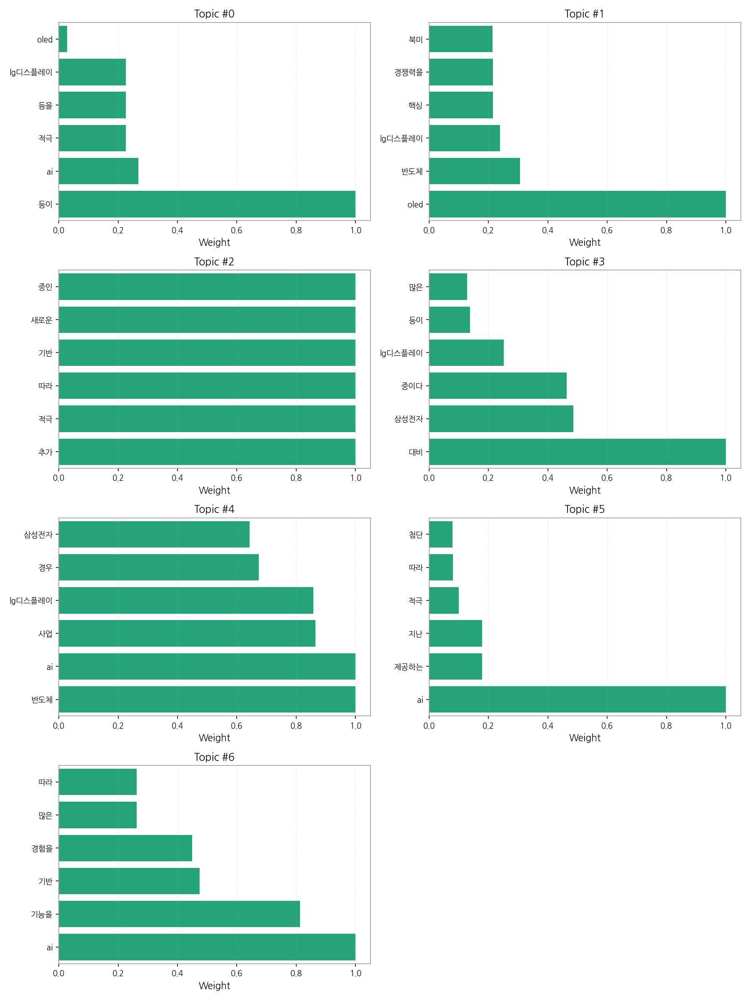
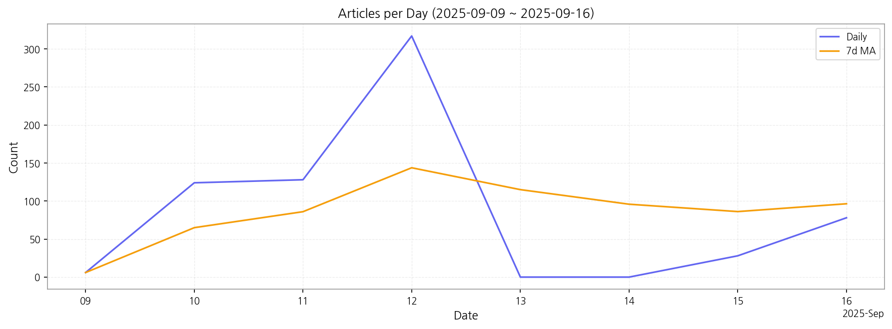

LG디스플레이와 삼성전자를 중심으로 한 한국 반도체 및 디스플레이 산업의 AI 기반 기술 도입과 경쟁 심화, 그리고 이에 따른 시장 변화를 주요 내용으로 다루고 있습니다. 특히 OLED 기술 경쟁력 강화를 위한 투자와 AI 기술 접목, 그리고 새로운 사업 확장을 위한 적극적인 행보가 주목받고 있습니다. 이는 글로벌 시장 경쟁 심화에 대응하고 미래 성장 동력을 확보하려는 기업들의 전략적 선택으로 해석될 수 있습니다.
9월 12일 기사 수가 317건으로 급증한 후 9월 15일 28건으로 급감하는 등 큰 변동이 있었습니다. 이는 특정 뉴스 이벤트 또는 발표에 따른 집중적인 보도 후 관심이 감소한 것으로 추정됩니다.

| Rank | Keyword | Score |
|---|---|---|
| 1 | 디스플레이 | 9.600 |
| 2 | 신규 | 5.362 |
| 3 | 삼성전자 하이닉스 | 5.088 |
| 4 | 양산 소재 | 5.088 |
| 5 | 하이닉스 | 4.480 |
| 6 | 한국거래소에 따르면 | 4.240 |
| 7 | 북미 주력 | 4.240 |
| 8 | 더퍼블릭 조두희 | 4.240 |
| 9 | 조두희 기자 | 4.240 |
| 10 | 확인할 | 4.240 |
| 11 | 제공할 예정이다 | 4.240 |
| 12 | 이라고 말 | 4.240 |
| 13 | 재배포 금지 | 4.240 |
| 14 | 이를 통 | 4.240 |
| 15 | 반도체 방산 | 4.240 |




LG디스플레이와 삼성전자를 중심으로 한 한국 반도체 및 디스플레이 산업의 AI 기반 기술 도입과 경쟁 심화, 그리고 이에 따른 시장 변화를 주요 내용으로 다루고 있습니다. 특히 OLED 기술 경쟁력 강화를 위한 투자와 AI 기술 접목, 그리고 새로운 사업 확장을 위한 적극적인 행보가 주목받고 있습니다. 이는 글로벌 시장 경쟁 심화에 대응하고 미래 성장 동력을 확보하려는 기업들의 전략적 선택으로 해석될 수 있습니다.
9월 12일 기사 수가 317건으로 급증한 후 9월 15일 28건으로 급감하는 등 큰 변동이 있었습니다. 이는 특정 뉴스 이벤트 또는 발표에 따른 집중적인 보도 후 관심이 감소한 것으로 추정됩니다.
| Idea | Target | Value Prop | Score |
|---|---|---|---|
| AI 기반 디스플레이 품질 예측 및 관리 플랫폼 | LG디스플레이, 삼성디스플레이 등 대규모 디스플레이 제조업체의 품질 관리 부서, 생산 관리 부서 (KR) | AI 기반 이미지 분석 및 예측 기술을 통해 불량률을 최대 15% 감소시키고, 생산 효율을 향상시킵니다. 실시간 모니터링 및 예측 기능을 제공하여 사전 예방적 품질 관리가 가능합니다. 차별화 포인트는 실시간 예측 알고리즘을 통한 선제적 대응입니다. | 4.50 |
| 전자부품 제조 공정 데이터 분석 및 예측 서비스 | 전자부품 제조업체의 생산 관리 부서, 품질 관리 부서 (KR) | AI 기반 머신러닝 기술을 활용하여 전자부품 제조 공정 데이터를 분석하고, 생산성 및 불량률을 예측합니다. 실시간 데이터 모니터링 및 이상 징후 감지 기능을 제공하여 문제 발생을 사전에 예방하고, 최적의 생산 계획을 수립할 수 있도록 지원합니다. 차별화 포인트는 다양한 공정 데이터 통합 분석을 통한 정확도 향상입니다. 최근 반도체 및 디스플레이 산업의 AI 도입 확산 추세에 따라, 이 서비… | 4.20 |
| 디스플레이 부품 조달 플랫폼 구축 및 운영 | 디스플레이 제조업체의 구매 부서, 중소 부품 공급업체 (KR) | 온라인 플랫폼을 통해 디스플레이 부품의 효율적인 조달을 지원합니다. 투명한 가격 비교 및 경쟁 입찰 시스템을 제공하여 거래 비용을 절감하고, 실시간 재고 관리 및 납기 관리 기능을 통해 부품 수급 관리의 효율성을 높입니다. 차별화 포인트는 블록체인 기반의 투명한 거래 시스템입니다. | 4.00 |
| AI 기반 사이니지 광고 플랫폼 서비스 | 사이니지 운영 업체, 광고 대행사, 대형 유통업체 (JP) | AI 기반으로 사이니지 광고 효과를 실시간으로 분석하고, 타겟팅 광고를 제공합니다. 광고 노출 횟수, 시청 시간, 고객 반응 등을 분석하여 광고 효율을 극대화하고, 데이터 기반으로 광고 전략을 최적화합니다. 차별화 포인트는 AI 기반의 정교한 타겟팅과 실시간 효과 측정입니다. | 3.80 |
| 모빌리티 연동 디스플레이 광고 플랫폼 | 자동차 제조사, 모빌리티 서비스 제공업체, 광고 대행사 (EU) | 자동차 내 디스플레이를 활용한 맞춤형 광고 플랫폼을 제공합니다. 운전자의 위치, 시간, 선호도 등을 고려하여 개인화된 광고를 노출하고, 운전 중 안전을 고려한 광고 노출 방식을 채택합니다. 차별화 포인트는 운전자 안전을 최우선으로 고려한 광고 노출 알고리즘입니다. | 3.50 |